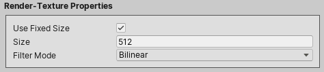

Tweaking The Water Visuals¶
What we'll cover on this page?¶
- Water Body Properties
- Water Surface Properties
- Water Refraction Properties
- Water Reflection Properties
- Water Fake Perspective Effect Properties
- Water Emission Effect Properties
- Water Rendering Properties Properties
Water Body¶
Body Color¶
We can set the water body color to either a Solid Color or a Gradient Color. If we choose to use a Gradient Color, the Gradient Offset property controls how much to shift the gradient-line midpoint position (where the middle of the color transition should be).
Info
The Gradient Offset property range: -0.5 → 0.5
Body Texture¶
We can apply a texture across the water body.
Warning
The texture should have its wrap-mode set to Repeat or Mirror in the texture import settings.
Body Texture Sheet Properties¶
This texture could be a regular texture, or a texture-sheet (a texture consisting of many frames) by toggling the Is A Texture Sheet property on, and then specifying the number of columns and rows and also setting how many frames to play per second.
Body Texture Opacity¶
The Opacity property controls the visibility of the texture.
Body Texture Scrolling Speed¶
We can make the texture scroll, in the X and/or the Y directions, by tweaking the Scrolling Speed property.
Body Texture Tiling Mode¶
Regarding the texture tiling properties, there are two tiling modes:
-
Stretch: The texture stretches when the water object size changes, always keeping the same number of tiles we specify for the X and Y directions.

-
Repeat: The texture repeats when the water object size changes. In this mode, we specify the scale in units of a single tile.
Body Texture Offset¶
We can provide a texture offset regardless of the selected texture Tiling Mode.
Body Texture Distortion Effect¶
Distortion Scale - Offset¶
The Mathf.PerlinNoise(x,y) function is used to sample the Perlin noise texture values. The Scale and Offset properties controls the sampled area size and origin, respectively.
Warning
The Scale And Offset properties are used to generate the noise texture (which actually happens only in the editor), and as such they are not animatable.
Distortion Strength¶
The Strength property, as the name suggests, controls how strong the distortion effect is.
Distortion Speed¶
The Speed property controls the noise texture scrolling speed.
Distortion Tiling¶
The Tiling property controls the scale of a noise texture tile relative to a water body texture tile.
Example
A value of 0.5, for both the X and Y axis, will apply the noise texture across 4 water body texture tiles.
Tip
We can use the Tiling property to lower the distortion strength across one axis, and keep the full strength across the other.
Water Surface¶
Surface Thickness¶
The Thickness property sets the thickness of the surface line. The thickness can be either Absolute or Relative to the water height.
Script Reference
1 2 3 4 | |
Note
We will look into the Submerge Level property later when we go through the water fake perspective effect properties, here.
Surface Color and Texture¶
Just like the water body, we can tweak the surface tint color and apply a texture across the surface.
The description of the surface color and texture properties is exactly the same as the water body texture properties, as discussed here.
Water Refraction¶
Script Reference
1 | |
Refraction Bending¶
The bending property controls how much we would like to shift the submerged portion of an object relative to the other portion above the water.
Example
Refraction Distortion Effect¶
The refraction distortion properties description is the same as the water body distortion effect properties, discussed here.
Refraction Layers¶
We select which layers to include in the refraction rendering using the Objects To Render property under the Refraction Properties in the water component inspector.
Script Reference
1 | |
Refraction Render-Texture Properties¶
If the Use Fixed Size property is toggled on, the Size property sets the refraction render-texture width and height.

Script Reference
1 2 | |
But, if the Use Fixed Size property is toggled off, the refraction render-texture will have a dynamic size, and the render-texture width and height are in this case equal to the the water object visible area on screen width and height. We can even downscale this computed size by lowering the Resizing Factor property value.
Script Reference
1 2 | |
Lastly, We can set the refraction render-texture Filter Mode property to either Bilinear or Point.
Script Reference
1 | |
Water Reflection¶
Script Reference
1 | |
Reflection Visibility¶
We control the visibility of the rendered reflection image under the Reflection Properties in the water material inspector.
Reflection Fade¶
We can make the reflection fade vertically along the water object, starting from the top at full opacity. To do this, we toggle the Fade property on, and proceed to select the desired fade speed:
- Linear
- Exponential - Two
- Exponential - Three
- Exponential - Four
Reflection Distortion Effect¶

The reflection distortion properties description is the same as the water body distortion effect properties, as discussed here.
Reflection Layers¶
We use select which layers to include in the reflection rendering using the Objects To Render property under the Reflection Properties in the water component inspector.
Script Reference
1 | |
Reflection Render-Texture Properties¶
If the Use Fixed Size property is toggled on, the Size property sets the reflection render-texture width and height.
Script Reference
1 2 | |
Otherwise, the refraction render-texture will have a dynamic size, and the render-texture width and height are equal to the the water object visible area on screen width and height. We can even downscale this computed size by lowering the Resizing Factor property value.
Script Reference
1 2 | |
Lastly, We can set the reflection render-texture Filter Mode property to either Bilinear or Point.
Script Reference
1 | |
Reflection Frustum Properties¶
Frustum Z-Offset¶
The Z-Offset property controls where to start rendering the water reflection relative to the water object position. This might be useful if we would like to render the reflection of certain objects that are in front of the water object.
Script Reference
1 | |
Frustum Height Scaling Factor¶
The reflection frustum size is equal to the visible water area size. We can expand this frustum vertically by setting the Height Scaling Factor property.
Tip
We can visualize the reflection frustum bounds in the scene-view by toggling the 'eye icon' on.
Script Reference
1 | |
Water Fake Perspective Effect¶
The fake perspective effect consists of rendering certain objects that intersect the submerge level as partially submerged into water, adding a sense of depth to the water.
We can enable this effect under the Surface Properties in the water material inspector by toggling the Submerge Level property on and adjusting the submerge level position.
Script Reference
1 2 3 4 5 | |
Fake Perspective Effect Layers¶
Fake Perspective Effect - Refraction Layers¶

Under the Refraction Properties in the water component inspector, we set the Partially submerged Objects property to select which objects layers to render as partially submerged into water when they intersect the submerge level.
Script Reference
1 | |
Fake Perspective Effect - Reflection Layers¶
If we would like to render the reflection of certain partially submerged objects, we make sure to select their layers under the Reflection Properties in the water component inspector.
Script Reference
1 | |
Fake Perspective Effect - Reflection View Frustum Properties¶
We can expand the partially submerged objects reflection frustum as well as the other objects reflection frustum vertically by settings their respective scaling factors properties.
Tip
We can visualize the reflection frustums bounds in the scene-view by toggling the 'eye icon' on.
Script Reference
1 | |
Water Emission Effect¶
If the water material is using one of the lit shaders, then we can set an Emission Color and also tweak its Intensity under the Emission Properties in the water material inspector.
Info
The asset comes with 5 lit shaders, 3 for the Builtin Render Pipeline (Pixel-Lit, Vertex-Lit, Vertex-Lit-Only-Directional-Lights), 1 for the Universal Render Pipeline (URP), and another one for the Lightweight Render Pipeline (LWRP).
Rendering Properties¶
Rendering Properties - Material Inspector¶
Under the Rendering Options in the water material inspector, the Mask Interaction property controls how the water object behaves when interacting with a Sprite Mask or with the Mesh Mask. We can set the mask interaction to one of the following options:
- None : No interaction
- Visible Inside Mask : the water is visible where the Sprite Mask or the Mesh Mask overlays it, but not outside of it.
- Visible Outside Mask : the water is visible outside the Sprite Mask or the Mesh Mask, but not inside it.
The Apply Tint Color(s) On Top Of Texture(s) property controls in which order, the water body and the water surface, tint colors and textures are applied. If this property is toggled on, the textures are applied first and the tint colors are applied second, otherwise textures are applied last.
Rendering Properties - Component Inspector¶

Under the Rendering Properties in the water component inspector, the Far Clip Plane property sets the furthest point relative to the water object that gets included in the water refraction/reflection rendering.
The Render Pixel Lights property controls whether or not the rendered objects are affected by pixel lights.
Info
The Render Pixel Lights property is ignored when working with the URP/LWRP.
We can also activate/deactivate the High Dynamic Range (HDR) and the Multisample Anti-Aliasing (MSAA) rendering.
Info
The MSAA rendering is activated only if the Antialiasing is enabled in the project quality settings or in the URP/LWRP settings asset.
Script Reference
1 2 3 4 | |
Note
The Sorting Properties and the Mesh Mask Properties are discussed in the Getting Started section of this guide.